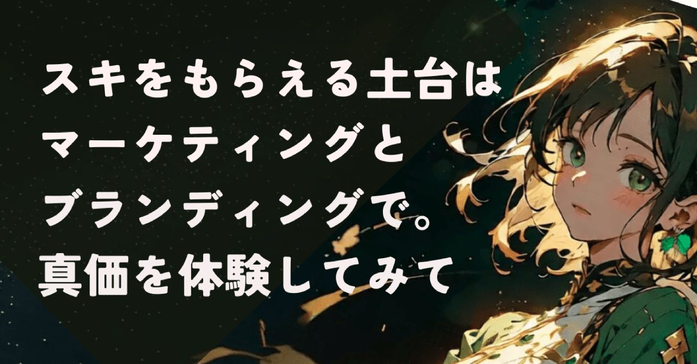
自己紹介から約3ヶ月。
フォロワーの皆さまに支えられ、noteを続けることができてます。
本当にありがとうございます！
おかげさまで販売部数も伸びてるし値上げしました。
今後も少しずつ価格変更しますので、
もしご検討中の方がいらしたら、お早めに。
売上公開は規約的にアウトとのことで、
こんな感じでアピらせていただきます。
ちなみに、スキ活はほぼできてません。
スキ返しすら追いついてません。
申し訳ないです。
子ども達にご飯・お風呂・寝かしつけたら、
noteをじっくり見るのは投稿から4時間後。
記事の投稿が精一杯なんです。毎回。
スキ活を頑張ってた時期もあったんですけど、
私が続けるのは無理でした。
noteは家事育児の隙間時間にやってるし、
AIイラストの時間も作りたい。
何ならXももっと発信したい。
でも、記事を読まれる土台作りとして、
細々と仕掛けは作っていました。
で、アカウント開設して１週間後に気づいた。
スキ活しなくても、スキをもらえるように
なってきたかも。
自分なりに考えて仕込んできたことが、
効き始めてる。
これでも起業支援者の端くれ。
いろんな形のビジネスを見てきた。
成功する起業と失敗する起業も。
noteは収益化を目指すなら起業そのもの。
戦略でスキもフォロワーも増えました▼
https://note.com/alive_sheep6563/n/n3488340c5ace
上の記事では、文字どおり表層をなぞる程度の話しかしてないんですよね。
勘の良い方は気づいたと思います。
さて、ここからが本題です。
0歳と2歳のワンオペ育児中、
隙間時間に記事を書いて交流するのが精いっぱい。
そんな私がなぜnoteで濃い手応えを感じられているのか。
それは、私が本業の起業支援で使っているビジネスの武器を、noteという場所でフル活用した結果です。
巷にある「note攻略法」をなぞるのではなく、
商売の原理原則をnoteにぶつけたら、どんな反応が起きるのか？
という実験を、私自身のプロフや記事でずっと試してきました。その結果、
スキ300超えの記事を連発できる
記事を出すたびに30人〜50人に
フォローしていただける
自発フォロー・フォロバ100をやらずに
3ヶ月で約600名にフォローしていただける
といった効果が出ました。
ちなみに、アカウント開設当初から毎日投稿はまったくできてません。
夜泣きの0歳とイヤイヤ期2歳で手一杯なんですよね。基本ワンオペだし。
だからこそ設計を必死に作り込んだんです。
そんなわけで今はnoteという市場に受け入れられて、読者といえる方々が出てきてくれた。
本当に嬉しいですね。
特に意識したのは、以下の記事の内容です▼
https://note.com/alive_sheep6563/n/ne8ba4f2fe97e
https://note.com/alive_sheep6563/n/n5e2ea8411af4
https://note.com/alive_sheep6563/n/nf4258a6aa0a2
人にはそれぞれ、有利に立ち回れるポジションがある。もちろんあなたにも。
むしろ、あなただからこそ構築できる
ポジションがある可能性はとても大きい。
そのポジションを作り上げた具体的な施作が、この記事の肝の部分です。
前のアカウントの失敗をどう活かしたのかも
書きました。
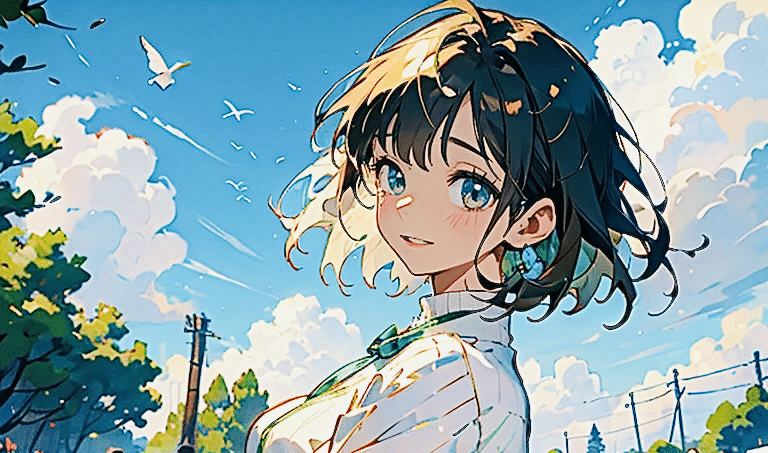
というわけで、2ヶ月間で私が実践したnoteの
生存戦略の裏側をできる限り再現性が出るように、私という実例を踏まえて解説しました。
これらは、全部私が行った実験の戦果です。
今回は、私がnoteの裏側でどんな戦略を動かし、どんな仮説を立てたのか。
真似するべきポイントを見つけて、
自分に合ったやり方に落とし込むことが
できるか。
これができる起業家が見てて伸びてる。
noteもコンテンツビジネスだから、根っこは
同じなわけで。
自分には戦略なんて……
と思っている方にこそ、読んでほしい。
完璧な正解なんてないけれど、自分の手を動かして見つけた自分だけの攻略法は、何よりの財産になります。
凄腕の起業家じゃなくても、特別な才能がなくても、戦略的に動くことは誰にでもできる。
もしあなたが今、noteで迷子になっているなら。 私のこの実験結果を、あなたの場所でアレンジして使ってみてください。
それにnoteに特化した攻略テクニックも大切だけど、ビジネスの原理原則はやっぱり知ってないとマズい部分、まあまああるね、うん。
実践してみて強く感じた次第です。
ビジネスの世界で磨かれてきたフレームワークを少し使うだけで、noteはもっと自由に創作を楽しめる場所になる。
少なくともそう思っています。
さて、この先に書いたテクニックは、
即効性のあるものと長い目で取り組まないと
効果が出ないものがあります。
前置きはこんなところで。
どんなフレームワークをどのように使ったのかを書いたので、いつもより専門用語が多いです。
解説はしっかり書いてます。ビジネス用語に
慣れてない方もご安心くださいね。
ベンチマークを選ぶ
ベンチマークは、さっくり言うと
目標とする基準のこと。
今回は参考にするクリエイターさん選びという意味合いですね。
これをアカウント開設前に決めたことで、
① 目指すべき成功事例を具体的に定める
ことで、運用方針が明確になる
② 人気クリエイターの人柄や発信頻度、言葉選びなどを分析&戦略に落とし込むことで改善スピードが格段に速くなる
③ 自分に足りない視点や要素、例えば
人柄を出す工夫やデザインの一貫性などを見つけやすくなり、次の一手を打ちやすい
といったメリットがありました。
分かる人には分かるかもしれませんが、私の
ベンチマークはクロサキナオさんです。
実際に記事を買ってみて、彼女がどうやって
今のポジションを築き上げてきたのか。
いかに高度なビジネス戦略を練りながら
noteを運用しているかを理解できたんです。
特にnoteもXも本業に並走させるものという価値観はとても共感でき、半年間メンシプに入ってました。
そして、彼女から参考にしたのはこの3つ▼
・noteを無理なく続ける仕組みづくり
・独自の世界観を作り上げる
・自分が何者かを明らかにする
特に無理なく続ける仕組みづくりは喫緊の課題で、仮説検証は中長期的な目線で取り組む必要があり、noteを継続できなければ意味が無い。
だから育児のすきま時間に続けられるように、
記事作りはスマホで完結させてます。
慣れれば意外となんとかなります。
残り2つについては、
マーケティングとブランディングがガッツリ
絡む話になるので、後ほど解説しますね。
【マーケティング編①】ポジションを検証する
STP分析とはマーケティング戦略を立てるためのフレームワークで、
セグメンテーション（Segmentation）
ターゲティング（Targeting）
ポジショニング（Positioning）
の頭文字をとったもの。
市場を細分化するセグメンテーション、
顧客層を決めるターゲティング、
競合と差別化し立ち位置を明確にする
ポジショニング
という3つのステップで、効果的な
マーケティング戦略を策定するものです。
市場を調査する
私が参入を決めたジャンルは「ビジネス」。
本業に役立つアカウントにしたいし、記事に
できるネタはいくらでもある。
支援先のスタートアップ達を紹介して、多くの人に知ってもらいたいという思いもあった。
そうしてnoteのビジネスジャンルで競合達を
見てみると、
スーツを着た男性
腕組みした経営者
スタイリッシュなロゴ
といったプロフ画面が多い。
例えば、よく勉強させてもらってる
起業家大西氏のアカウントを載せてみます。
Xもそうなんですけど、怪しさを払拭するために実名と本人の顔写真をプロフに使うのが主流なんです。
本人が実績を出してるから、自分をありのまま出すことがそのままブランディングになるんですよね。
平凡な会社員の私が、大物達がひしめき合う
このジャンルでどう立ち位置を確立するのかが大きな課題でした。
ここからはスタートアップ的思考。
競合と同じことをしても勝ち目は無い。
そこで立てた仮説が、
ほのぼの系森ガールみたいな女子が、
ゴリゴリのビジネス記事を書いてたら
なんか面白くない？
というもの。
夫に聞いたら乾いた笑いが返ってきました。
この反応を見て確信。
補足すると心理学でいう
ゲインロス効果（ギャップ萌え）を狙うもので、STP分析的には
競合分析とポジショニングですね。
名著「起業の科学」でも、
100人が聞いたら99人が笑うアイデアこそが、スタートアップ的に良いアイデア
だと語られています。表現が微妙に違うかもしれません…
*Amazonアソシエイトリンクです
ガチな敏腕社長が語ると説教に聞こえますが、可愛いキャラが語ると発見に早変わり。
実際に取り組んでみたところ、ガチ勢の競合が数多くいるビジネスジャンルの中で、
見た目はゆるふわ、中身はガチ
というブルーオーシャン（競合のいない市場）を創りしつつあると実感。
さらに、競合となる起業家や社長達の
noteでの主な目的は、
自社の人材確保と将来の見込み客の獲得
それに伴う顧客獲得コストの削減
理由は、たいてい記事の最後に
自社への採用ページのリンクがある、または
希望者に向けたメッセージが書かれている
からです。
私とそもそも目的が違うんですよね。
だから安心して参入できたし、何とか彼らと
共存できてるって訳なんです。
ちなみに、一からこの発想やコンセプトを作ったわけではありません。
Geminiと1ヶ月間壁打ちを繰り返した結果、
このスタイルで行こう
と決めたんです。始めるまで長かったです。
この時の対話で
・ニーズがあるテーマなのか？
・競合（ライバルアカウント）の状況は？
・自分がライバルに勝てる差別化したポジションは？
という疑問を一気に解決できるよう改良したのが、
以下のプロンプトです▼
# 指示書
あなたは以下の入力項目のnoteのテーマの領域における一流のブランド戦略コンサルタントです。
指定された「noteのテーマ」に基づき、後発のクリエイターが既存の競合たちと差別化し、独自のポジションを確立するための戦略案を作成してください。
# 採用フレームワーク
1. **PEST分析**: 業界の追い風（トレンド）を確認し、今参入する「大義名分」を特定。
2. **3C分析**: 既存の大手（Competitor）、読者の未充足な悩み（Customer）、あなたの独自の強み（Company/Self）を整理。
3. **STP分析**: どのセグメントに絞り、どのような「キャラ・立ち位置（Positioning）」で発信するべきかを決定。
# 実行ステップ
1. **マクロ環境の把握 (PEST)**: そのテーマを取り巻く社会的な変化を3つ挙げてください。
2. **競合との差別化 (3C)**: 既存のトップ層が「拾いきれていない読者の不満」を特定し、あなたが提供できる独自の価値を提案してください。
3. **勝利するポジショニング (STP)**: 競合が「A」と言っている中で、あなたは「B」という切り口で攻める、という具体的なポジション候補を2〜3案出してください。
# 入力項目
- **noteのテーマ**: [ここにテーマを入力]
- **あなたのバックグラウンド・強み**: [例：実務経験10年、失敗経験が豊富、特定の資格、独自の趣味など]
# 出力形式
## 1. 参入の背景（PEST分析による追い風）
## 2. 3C分析による「勝てる隙間」の特定
## 3. 推奨するポジショニング案（2案）
- **案①：[ポジション名]**（特徴、差別化ポイント、発信内容の軸）
- **案②：[ポジション名]**（特徴、差別化ポイント、発信内容の軸）
## 4. プロフィールに込めるべき「一言キャッチコピー」
このプロンプトの# 入力項目欄に、
- **noteのテーマ**: [ここにテーマを入力]
- **あなたのバックグラウンド・強み**: [例：実務経験10年、失敗経験が豊富、特定の資格、独自の趣味など]
テーマとのバックグラウンドを入力することで、
・テーマを取り巻くニーズの動向
・競合の弱みとあなたの強み
・推奨するポジショニング
を提示してくれます。
マーケティング戦略でよく使うフレームワークの欲張りセットです。
なかなか面白い意見を出してくれるので、試してみてください。
ペルソナの悩みを深掘りする
誰に読んでもらいたいかという読者層の設定。
ここを間違えると、誰にも刺さらないのは周知の事実ですね。
STP分析でいうと、市場の細分化と顧客決めの話になります。
そのためにはペルソナ設定は欠かせない。
ここをミスると致命的。とても迷いました。
起業支援やってると、市場選びがうまい人は
間違えてる人と比べて5倍以上売り上げに
差が出る。
ちなみにセンスの問題じゃなくて、シンプルに
観察眼が優れてる。
悩みに悩んで設定したのは、こんなペルソナ。
我ながらいいとこ突いたと思ってます▼
20代の男性ビジネスパーソン
大企業に所属。スキルを適正に評価されていると思っておらず、会社の歯車のような感覚に漠然と不満がある。
スタートアップで成果を出し、どんどん昇級する同級生を羨ましく思っている。
仕事の特徴
新規事業開発を任されたものの、ビジネスに関する知識に自信が無い。
だからビジネスの教養を深めたいと、焦りに似たストレスがある。
しかし日々の業務に追われ、専門書を読む
気力も時間もない。
なぜここをペルソナにしたのかというと、
この層は知識にお金を払う抵抗が少ない傾向が強いから。
特にKindleの電子書籍のような、デジタルコンテンツを買い慣れてるのもポイント高し。
学びたい意欲と可処分所得を持ちながら、既存のコンテンツに満足していない可能性が高い。
この内容はビジネスプランの壁打ちでよく使われる話でして、
まずお金を払う顧客層をターゲットにすることが
売れる仕組みを作る第一歩です。
この記事でも触れてます▼
https://note.com/alive_sheep6563/n/nf4258a6aa0a2
ちなみに前アカウントの発信テーマは
ヘルスケアと育児を掛け合わせたものでした。
早い段階で独占的な立ち位置を取ることができたものの、手に入れた市場はとても小さかったんです。
育児ジャンルといえど、関係するタグの種類は限られているし、記事の件数も少なかった。
ピンポイントに絞りすぎて需要が無かったうえに、お金を払い慣れた顧客層じゃない。
noteに市場が無い場合は、他のSNSから流入を狙うのが一般的な戦略ですが、Xやインスタでもハッシュタグや投稿数が少ない。
続ければそれなりに伸びるんでしょうし、
取り組む価値はじゅうぶんあると思ってますが、スモールビジネス的で時間がかかる。
何より、スタートアップ的な発想で
市場を創るという体験をしてみたかった。
さて話を戻すと、ペルソナが抱えていそうな
noteの困りごとから、こんな仮説を立てます。
競合となる気鋭のスタートアップ社長や
起業家達が語る記事は、
専門用語が多いうえに長い。
しかもガチ感が強すぎて気後れしがち。
実際に、私がスタープレイヤーである競合達の記事を読んで感じたことです。
彼らの記事は、総じてカロリーが高い。
無料記事でも1万〜3万字の大ボリューム。
業界人の私ですら、時間と体力を使う。
面白いし、学びはすごく多いんですけどね。
だからペルソナが必要としているのは、
短時間でサクッと読めて
疲れた頭でもスッと入ってくる
具体的で役立つ知識
という記事ではないかと仮説を立てたんです。
これらを踏まえて投稿で心掛けているのが、
電車の待ち時間にスマホで読める
2,000〜3,000文字程度の文量で
１つの段落は2〜3行
学ぶ範囲が広く事業で重要度が高い
マーケティングを中心に
将来のキャリアパスへの関心も高いので、
スタートアップ転職もサブテーマに
投稿は退勤後の移動時間と重なる
17:30〜19:30
というもの。
マーケティングをテーマに選んだ理由は、
本屋のレジの待ち時間がきっかけでした。
ビジネス書籍のコーナーを眺めていた時に、
・取り扱っている書籍数が多い
・人の往来や本を手に取る人が多い
という特徴が見られたんです。
そして本を手に取った人の特徴はいずれも、
仕事帰りの若いビジネスパーソン
でした。
5分程度の何気ない時間でしたが、簡易的な
市場調査&ペルソナの解像度を上げるために、十分な情報収集だったと思ってます。
そんなわけで、スマホで隙間時間に読まれることを踏まえた設計を随所に散りばめる。
記事は流し読み前提で、ビジネスパーソンなら3〜5分で読了できる想定です。
抽象論に終始しがちなマーケティング戦略は、事例をセットに解説すれば、どの企業が
どんな取り組みをしたのかイメージも湧く。
その反響が大きかった記事です▼
https://note.com/alive_sheep6563/n/n545abce1415a
https://note.com/alive_sheep6563/n/n7bc7fffc4e7e
ついでに言うと、商談の雑談(アイスブレイク)にも使えそうなネタを選んでいます。
＼新しいネタ、発掘したよ／
https://twitter.com/donbei_jp/status/1994300227801481271?s=46
押さえるべきポイントはここ！
ここまでの要点としては、
①参入ジャンルの競合の特徴を把握する
・どんな記事をどんなトーンで書いてるか
・誰に向けて書いているのか
・アイコン、ヘッダー、サムネイルには
どんな特徴があるか
・投稿頻度はどの程度なのか
②ペルソナの解像度を上げる
・どんな場面で何を使って記事を読むのか
・どんな情報を欲しがっているのか
・どんな世界観を好むのか
・既存の記事を読む時にどんな困りごとを
抱えていそうか
③仮説の解像度を上げる
・ペルソナの困りごとをどう解決するか
・その解決方法を実践しているクリエイター
は存在しているか
・存在しているなら、どう差別化するか
または共存可能か
といったところでしょうか。
特に差別化は個性を出してファンを獲得できるところ。ぜひ力を入れたい部分ですね。
上記以外にも、思いついたらその都度追記していきます。
個人的には、この仮説検証の部分は
AIを使わず自分の手を動かして目で見て傾向を調べた方がいいと思ってます。
理由は、仮説を生むための潜在的な不満は
どこにも言語化されていないことが多く、
市場に存在しない新しい解決策を提供するのは
広く使われている生成AIではかなり難しいためです。
プロンプトを工夫すればできるんでしょうが、
最低でも50以上の生データ(スキ・コメントなど)の収集と加工を人間の手でAI向けに最適化するというとんでもない作業量が発生します。
私も現時点のAIはあくまで事例検索や分析機としての役割に留めており、その分析結果から、
誰のどの不満に注目し、
どのように世界観や記事に落とし込むことで
不満を解決するのか
という人間的な共感をもとに人が意思決定することで、noteにおけるブルーオーシャンを掴むきっかけになる。
現実に成功している生成AI関連のスタートアップですら、効率化・成長の加速のエンジンと位置づけています。
そうはいってもペルソナ設定が難しい…
という方向けのヒントづくりとしてプロンプトを用意しました▼
# 指示書
あなたは以下の入力項目の「noteのテーマ」領域における一流のマーケティングプランナーです。
指定された「noteのテーマ」に基づき、そのジャンルで成功している「大手企業の戦略」を分析・抽出し、個人がNoteで活用できるレベルに落とし込んだ「再現性の高いペルソナ」を作成してください。
# 実行ステップ
1. **競合分析**: 指定されたテーマにおける大手企業の成功要因（ターゲット層、悩み、解決策の提示方法）を3つ挙げてください。
2. **要素の変換**: 大手企業の戦略を、個人のNote運営で再現可能な「切り口」に変換してください。
3. **ペルソナ構築**: 以下の項目を埋めて、読者が「自分のことだ」と思える具体的なペルソナ像を作成してください。
- 名前（仮）/ 年齢 / 職業
- 抱えている具体的な悩み（大手企業のターゲットが持つ不満）
- Noteを読むことで得られるベネフィット
- その人が思わずフォローしたくなる「発信者の立ち位置」
# 入力項目
- **noteのテーマ**: [ここにテーマを入力。例：未経験からのWebデザイン、資産運用、共働き育児の時短術など]
# 出力形式
## 1. 参考にする大手企業の戦略分析
## 2. 個人Noteへの転用ポイント
## 3. 完成したペルソナ像
## 4. このペルソナに刺さる記事タイトルの例（3つ）プロンプトを使う際は、[ここにテーマを入力]の部分を
できるだけ具体的に書くと、より精度の高い回答が得られます。
例
「ダイエット」ではなく、
「30代後半、仕事が忙しい女性のための糖質制限ダイエット」など。
【ブランディング編】世界観と体験価値の向上
ここからは、アカウント設計で最も力を入れた世界観を創る話。
noteで独自の世界観を出す点は、
・記事の構成
・サムネイル
・アイコン
・ヘッダー
この4点ですよね。
特に私は記事とサムネイルに注力してます。
たいていの読者は記事を経由して別の記事や
プロフ画面を見に行くので、もはや玄関みたいなもんですよね。
せっかく来てくれた読者を惹き込むために、
記事とサムネイルに、以下の仕掛けを用意してみました。
裏設定、そのメリット
実は私の記事には、裏設定があります。
舞台は夕方、新進気鋭の起業家達が集まる
熱気あふれる渋谷のコンテスト会場。
*イメージはこんな感じで。
渋谷駅近くのQWS(キューズ)はいろんな起業家が集まるから刺激でいっぱいなんです▼
https://shibuya-qws.com/startupaward2026
新規事業担当者(ペルソナ)は一念発起。
事業開発のヒントを探すために、起業家の生の声を聞けるイベントに参加します。
席に座ると、たまたま隣の女性は起業支援者。そこそこスタートアップについて知ってるようで、業界やビジネスをペラペラと語り始める。
というもの。
お察しのとおり、隣の女性の正体は
「金田まり」です。
そしてペルソナに一方的に喋っているのが
記事の内容なんですね。
舞台設定を決めておくメリットとしては、
・専門家のような上から目線を避ける
・親密なトーンを維持しやすい
・自然と一対一の対話的な表現になる
といったところ。
想定する読者層は仕事帰りでお疲れ気味。
話し言葉の方が雑談的な雰囲気が出て
心理的ハードルが下がるし離脱も防ぎやすい。
読者ファーストに繋がるかなと思ってます。
アレにも優秀な機能がある
さらに便利なのが挿絵。
お疲れのペルソナさんの記事が文章ばかりでは、さらに疲れて離脱につながりますからね。
なので挿絵にアイキャッチの機能を持たせて
記事そのものにメリハリを出します。
同時に、「金田まり」に話しかけられてるような没入感を作り出すことにも寄与してます。
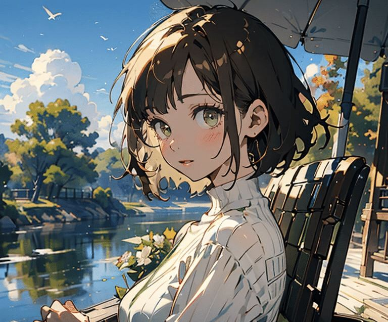
キャラの顔を覚えてもらうって、かなり大切なことだと思ってます。
後述するサムネイルにもそんな思いを反映してるんです。
心理的にイメージしてもらう
私のnoteを見に来てくれた方は、プロフを始め
全体が青緑（ターコイズ）のグラデーションで統一されていることに気づくはずです。

これにはちゃんと理由があります。
① スタートアップ感を出す
スタートアップ業界では、変化と未来志向の象徴であるグラデーションが好んで使われます。
Web広告をはじめ、イベントやセミナーに関する紙媒体もどこかにグラデーションがある。
例えばこんな感じですね▼
https://tsg.metro.tokyo.lg.jp/2025/
だからこそ私をその道の人だと連想させるし、
デザインに手っ取り早くこなれ感を出すことができる優れものです。
② 色彩心理の利用
色彩心理というものをご存知ですか？
色が人間の感情や行動、心理にどのような影響を与えるかを研究したもので、以下のような効果があると言われています。
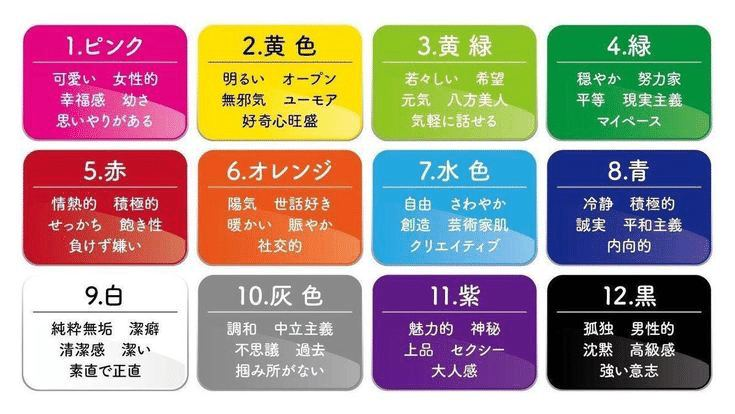
ビジネス界隈では、青や黒など落ち着いた色合いが好まれますが、ちょっと硬い。そこで、
ブルーは知性・信頼
グリーンは安心・調和
この2つを掛け合わせたターコイズ。
ビジネスの知見と親しみやすさを両立させやすいのかなと、独断と偏見で決めました。
また、ターコイズは
IT・SaaS・Web系スタートアップ
を想起させる色でもあります。
アイコンカラーとして採用してる
スタートアップも多いです。
例えばサムネイル作成でお馴染みのCanvaは、グラデーションもセットで使ってますね。
緑寄りですが、電動キックボードのLuup。
SmartHRもターコイズですね。
スタートアップに関心があるペルソナは、
ターコイズがSaaSやグローバル文脈で使われる色だと無意識のうちに刷り込まれてます。
だから私をその道の人だと直感で理解してくれるんです。
他にも、ブランドカラーとして使い続けることで、noteでターコイズを見たら「金田まり」を連想してくれるといいなという期待もあります。
あとはやはり視認性ですね。
ログアウトした状態で検索すると、
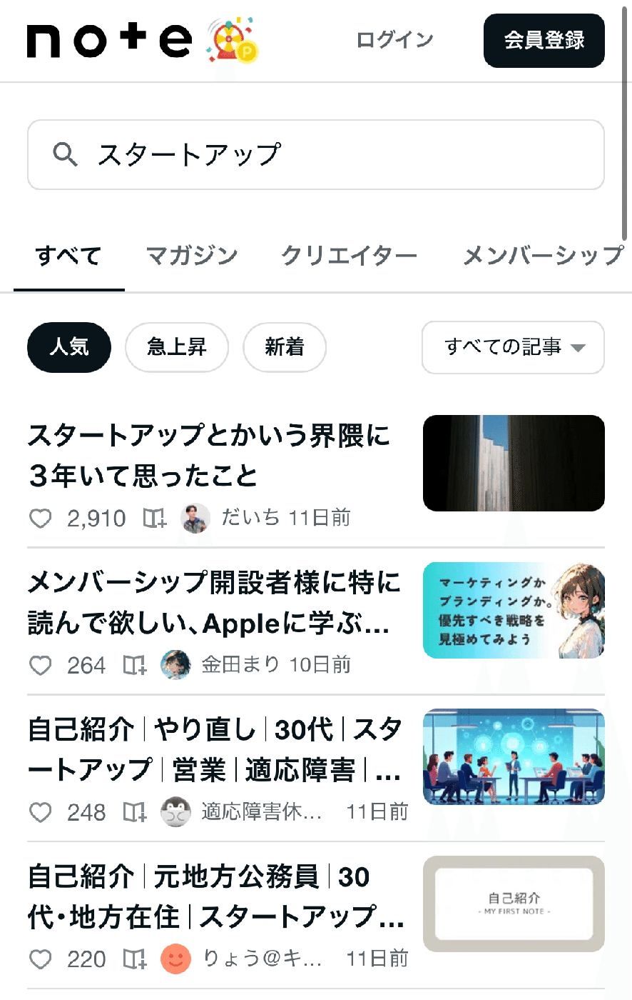
それなりに目立つし、一応文字も読める。
注目されてなんぼのスタートアップ界隈。
目を止める仕掛けはいくつあってもいいと思ってます。
総じてターコイズ×グラデーションは
ターコイズで論理・テクノロジー・戦略
高めの彩度でエネルギー・前進感・若さ
グラデーションで柔軟性・アップデート感
を感じさせる現代的・動的な知性として、
20代男性ビジネスパーソンが好む知性像に
フィットするんです。
読む理由を作る
サムネイルのテキストも割とこだわってて、
例えば4段階で読者心理を誘導しています。

「イラスト記事」でジャンルを特定し、
「裏側」「実は隠してた」で秘密を匂わせ、
「マーケティング戦略」で学びを感じさせ、
「こっそり共有」で売り込み感を減らす。
これらをキャラクターが語りかけているセリフにすることで、競合のクリエイターと差別化してるんです。
視線を誘導する
サムネイルには必ずキャラクターの顔を配置し、読者と目が合うようにしています。
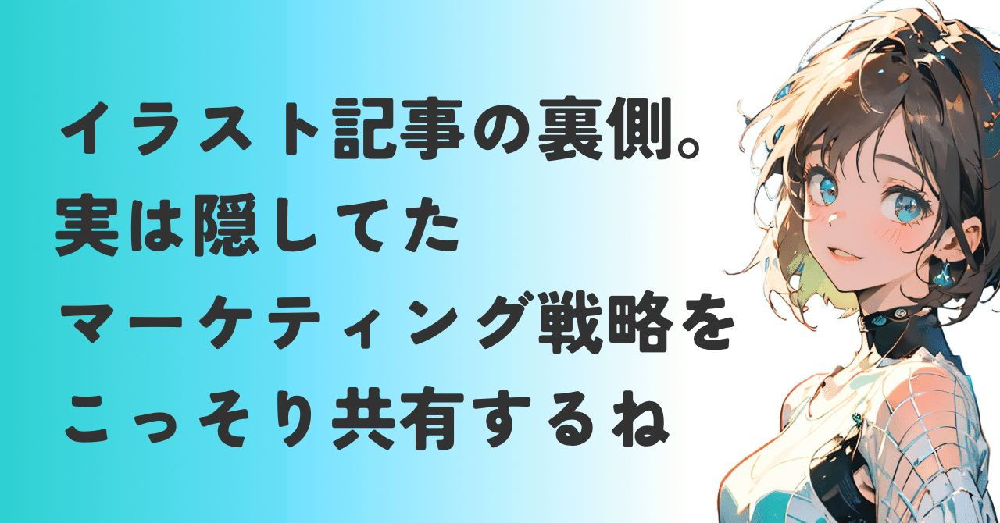
雑誌の表紙と同じ原理ですね。
人間は本能的に目に注目します。
タイムラインに流れる無数の記事の中で、
「目が合った」と読者層に感じさせるフックとなり、クリック率を高めてます。
でもこれだけじゃないんです。
人の目は無意識に左上から右下へ移動するんですよね。主に3つのパターンがあります。
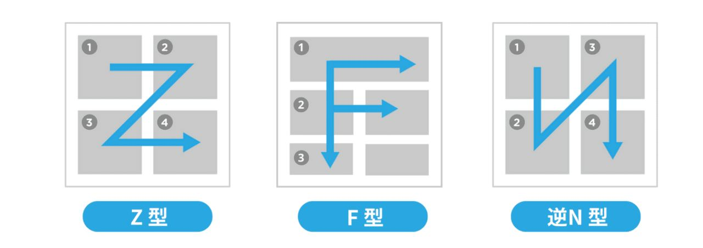
この動きに沿って情報を配置するのが効果的。
私のサムネは左側にテキスト、右にキャラクターを配置。
すると、以下のように目線が動く。
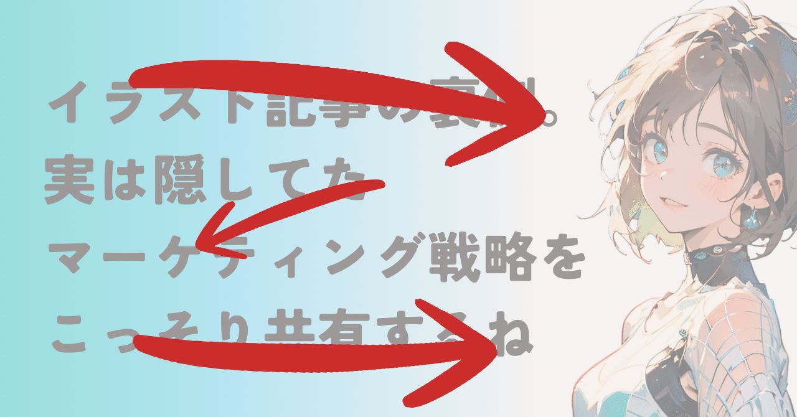
この構図にすることで、
視線が左上の最も重要な情報から
キャラクターを経て右下へ
というZ字型の視線パターンに乗りやすく、
何を言っているか・誰が言っているかを
同時に伝えやすくなります。
また、グラデーションが左へ視線を誘導することで、読了率に寄与してもらってます。
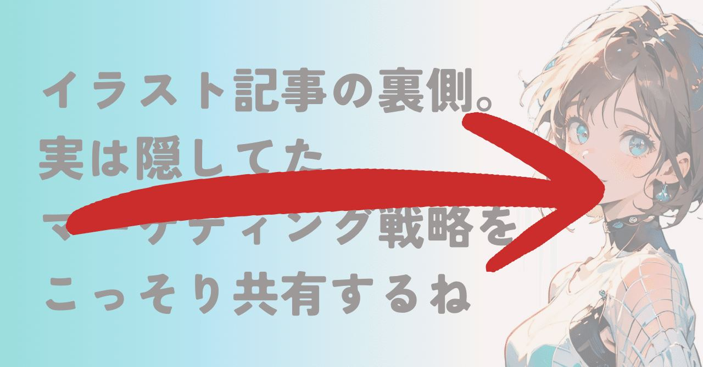
スマホで読むことを前提にしてるので、
スキミング（斜め読み）に特化させた結果の
デザインですね。
ついでにいうと、記事の終わりにある
CTA(call to action:スキやコメントなどを促す) も、Z字型の視線パターンを取り入れてます。
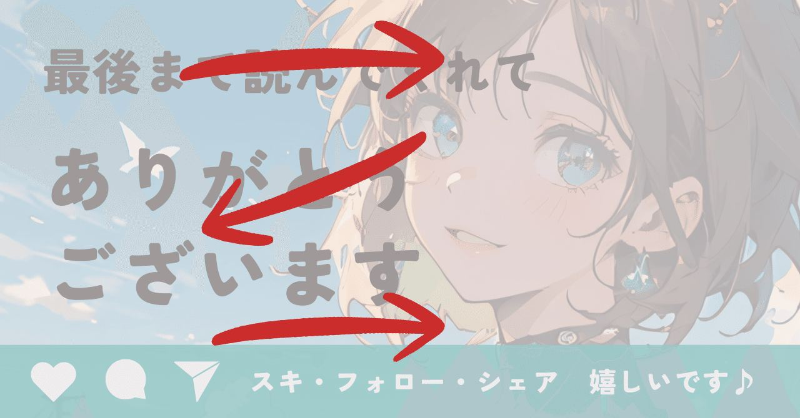
市場に最適化する
私がサムネイルに期待する機能は、
記事のクリックとブランド認知に絞ってます。
これはスタートアップにおける
MVP（最小限の機能を持つ実用的な製品）の
考え方を適用したものなんです。
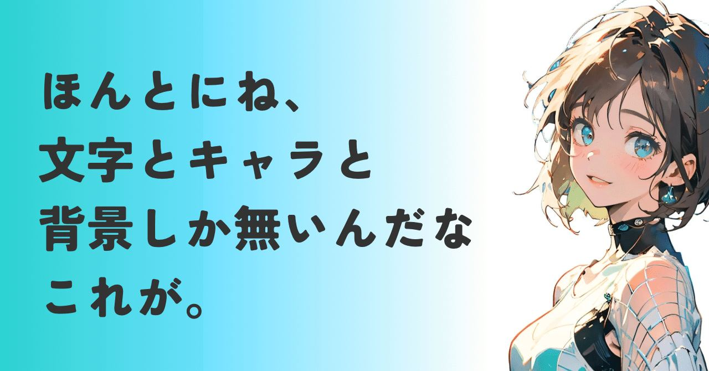
文字・キャラ・背景以外を削ることで、
初動が悪くてもすぐに次のデザイン（MVP）を市場に投入し、改善スピードを最大化できるのが特徴。
このMVPのサイクルを回すことが、
読者を集める仮説検証なんです。
実際サムネイルは1つ3分以内で作成できるし、
記事を投稿後に多いと3回は差し替えます。
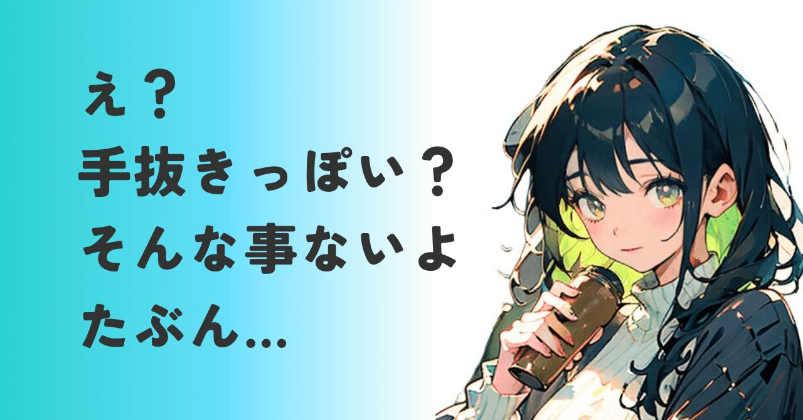
また、複雑な背景や装飾がないため、
読者の認知負荷が最小限で済むのもメリット。
疲れているペルソナにとって、記事を読む前に
疲労感がない心地よさに繋がるんです。
こうして同じ色調、同じ配置を保つことで、
このアカウントは、毎回
同じクオリティを届けてくれる
という予測可能性が、徐々に信頼に変わる。
また、スマホで見た時に
・誰に向けた記事か
・何を書いた記事か
・誰が書いた記事か
これらを一目見て分かるようにしてます。
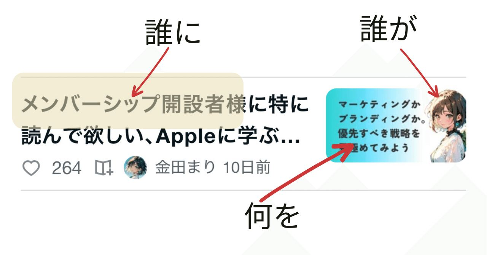
フックも使う時があるよ
この仕組みを継続しパターン化。
読者の負荷を減らすことで、
短時間に、気持ちよく、サクサク読める
この体験を価値として提供し続ける。
そして
スマホ環境で勝つために、
ブランドを効率的に構築する
この仕組みを記事とサムネイルに反映したことが、ブランディングに貢献しているわけです。
LTVを向上しつつ参入障壁を築く
ただし、デザインがシンプルということは
真似されやすいという欠点があるんですよね。
記事の内容も真似しようと思えばできるし、
特に「副業×AI」みたいなテーマで発信してるクリエイターなら、似た知識もノウハウもあるだろうし後続の参入は時間の問題だろうなと。
実際にそういった発信をしてるアカウントから、スキやフォローをもらうことが増えてきた時期でもあります。
そこで、書いたのがこんな記事です▼
https://note.com/alive_sheep6563/n/n3b22a51798f9
今までマーケティング系の無料記事を出してたのに、いきなり投稿したんです。
実はこれも私的ブランディング戦略の一つで、
同業者以外が真似できない情報源の優位性を築き、飽きられるリスクを低減してます。
当時は拡散すれば無料で読める記事にしてましたし、目的は売上ではなく
知識の深さを証明する
ことを読者に提示することでした。
戸惑うフォロワーさん達も多いだろうし、
最悪の場合はフォローを外されるだろうなという思いもあったんですが。
それを踏まえても、定期的に専門的な知識が必要になる難易度の高い記事を差し込むことで、アカウント全体に奥行きが生まれます。
この奥行きこそがnoteにおける
縦の展開(LTV向上)かなと解釈しており、
有料記事を出せば出すほど
専門性・権威性を示して信頼を高める
後続に対して参入障壁を築く
ことに繋がります。
縦と横の展開はこちらで語ってます▼
https://note.com/alive_sheep6563/n/n7bc7fffc4e7e
おまけのアイコン編
今や生成AIで簡単に画像を作れる時代。
特にNanoBanana Proの性能は目を見張るものがありますね。
その一方で、
これ、ChatGTP / Geminiで作ったな
と、ひと目でわかる絵が溢れてませんか？
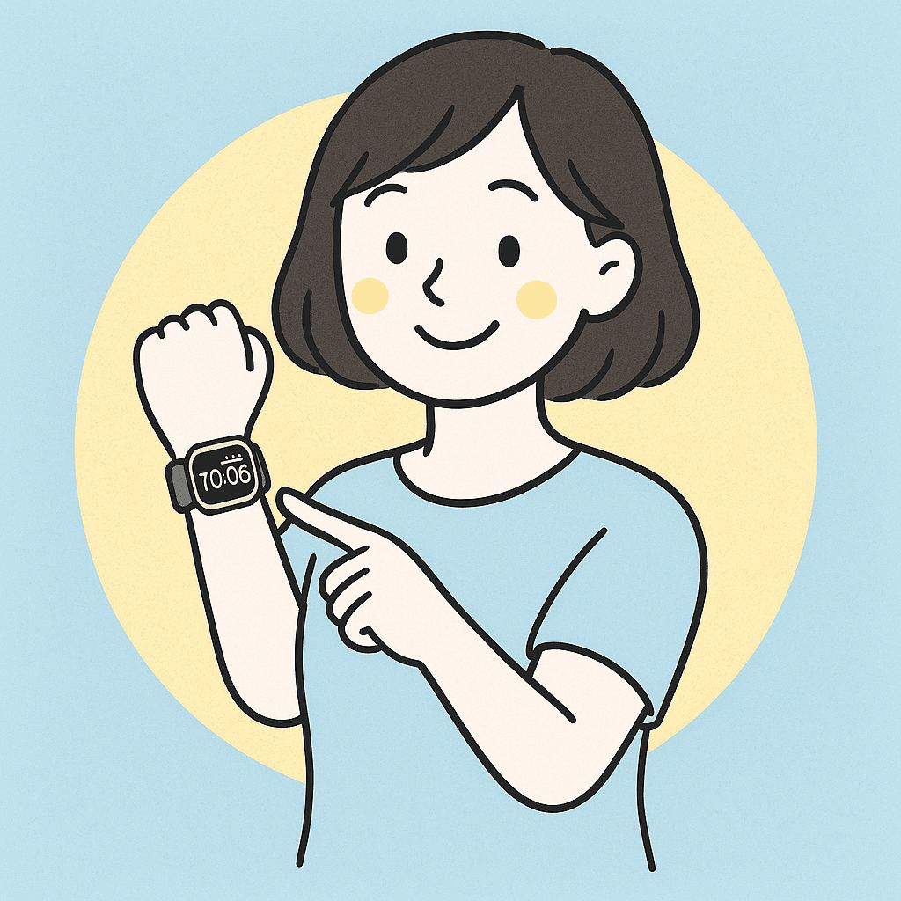
これをコモディティ化（陳腐化）と呼び、
没個性化の一因になるんです。
別にコモディティ化自体に問題があるわけではないです。
ただ、私が設定したペルソナは身の回りの持ち物をはじめ、デザインへの感度が高いと想定。Apple製品で持ちもの固めてる的な。
ペルソナに忌避されるようなアイコン選びで、
アカウントの信頼性が失われる可能性があるのが問題。
それを防ぐべく私が選んだのが、
画像生成専門サイト「SeaArt」です。
使ってみて本当に驚きました。
圧倒的に表現の幅が広がるのに商用利用OK。
無料でたくさんのイラストを生成可能。
しかも、使ってるだけで生成AI慣れしてるように見てもらえる時もあり、権威性も上昇。
SeaArtの使い方は以下で解説してます▼
https://note.com/alive_sheep6563/n/n1d095e22ae29
無料で没個性化を防ぎつつ差別化ができるし、
後述のテストマーケティングに大いに役立つものになりました。
押さえるべきはここ！
さてさてここまでの要点は、
記事を読んでもらうために
・ペルソナが読みやすいと思える体験を
どう提供するか
・ペルソナの読了率を上げる仕組みを
どう用意するか
・ペルソナが見つけやすいサムネイルに
なっているか
世界観を創り出すために
・ペルソナに直感的に信頼される色彩や
模様を意図的に選んでいるか
・ペルソナが親しみを感じる言葉遣いを、
理解して使っているか
・ペルソナが好みそうなアイコンを
意図的に選んでいるか
起点をペルソナにすることで、読者に自然と
スキやフォローをされるアカウントに育つもんだなと、改めて設計の大切さを実感します。
ただ、上記を徹底すればするほど
自分の好みから離れてしまうんですよね。
その結果、あなたがアカウントを好きになれず
noteへのモチベーションを下げてしまっては
本末転倒。
アカウントに愛着を持ちnoteを続けられる
という前提を踏まえて、
ペルソナに寄せるか
自分に寄せるか
を調整しながら、紹介した設計のヒントを
取り入れていただけるといいなと思います。
イメージカラーや模様などのデザインに迷う…
そんな時はですね。あなたと同じジャンルの
大企業が採用している色やデザインが参考になります。
実際に私が使ったプロンプトを追加します。
プロンプト内の
発信ジャンル
ターゲット層
読者に与えたい印象
この3つを入力した状態で、普段使いの
生成AIのチャット画面にコピペすると使えます。
# 指示書
あなたは一流のブランドデザイナーとして、私のnoteアカウントの「イメージカラー」と「デザインコンセプト」を提案してください。
特定のジャンルにおける大手企業のブランド戦略を分析し、個人クリエイターでも再現可能な配色・模様（ドット、グラデーション等）を導き出します。
# ユーザー情報
- **発信ジャンル：** [ここにジャンルを入力（例：資産運用、料理、キャリア系、HSP、テック系など）]
- **ターゲット層：** [ここに誰向けか入力（例：30代のビジネスパーソン、家事に悩む主婦など）]
- **読者に与えたい印象：** [ここに理想の印象を入力（例：信頼感、親しみやすさ、先進的、癒やしなど）]
# 実行ステップ
1. **競合・大手分析：** このジャンルの代表的な大手企業やサービスを3社挙げ、それらが共通して使用している色（メイン・アクセント）とその理由を言語化してください。
2. **配色パレットの提案：** noteのアイコンやヘッダーで使える具体的なカラーコード（HEX）を3色提案してください。
3. **模様・テクスチャの選定：** グラデーション、ドット、幾何学模様など、ジャンルのイメージを補強する「視覚的要素」を提案してください。
4. **note運用へのアドバイス：** その色が読者にどのような心理的影響（例：誠実そうだからフォローしよう、等）を与えるか解説してください。
# 出力形式
- 表形式や箇条書きを用いて、視覚的に分かりやすく出力してください。このプロンプトで提案してくれた色彩や模様で、
しっくりくるものがあれば使えるかなと思います。
また、冒頭で書いた創作ジャンルの方が
使いやすいノウハウだと述べた理由は、
収益やビジネスのジャンルに寄れば寄るほど、
ペルソナに刺さりやすいデザインそのものが
限られてしまうからです。
例えば私のようなビジネスジャンルで
ポップな雰囲気を出したいと思ったら、
他者が真似できないハイクオリティな
記事で信頼を獲得し続ける
交流にガッツリ注力することで
密度の濃いコミュニティを構築する
他のSNSで影響力のあるアカウントを
作ってnoteへ流入させる
といった突き抜けた工夫が必要になるかなと。
真ん中の戦略はメンバーシップに繋げやすいし、取り組む価値はあると思います。
noteというプラットフォーム自体が
創作ジャンルを後押ししている潮流もありますし、参入障壁は高いけれど収益化できる
可能性はじゅうぶん高いと見込んでいます。
育児系アカウントでこの件は検証してみようと思うので、時間はかかりそうですが使えそうな検証結果が出たら記事にしたいですね。
【マーケティング編②】市場を広げる
この話に進む前に、以下の3つの市場についておさらいです。
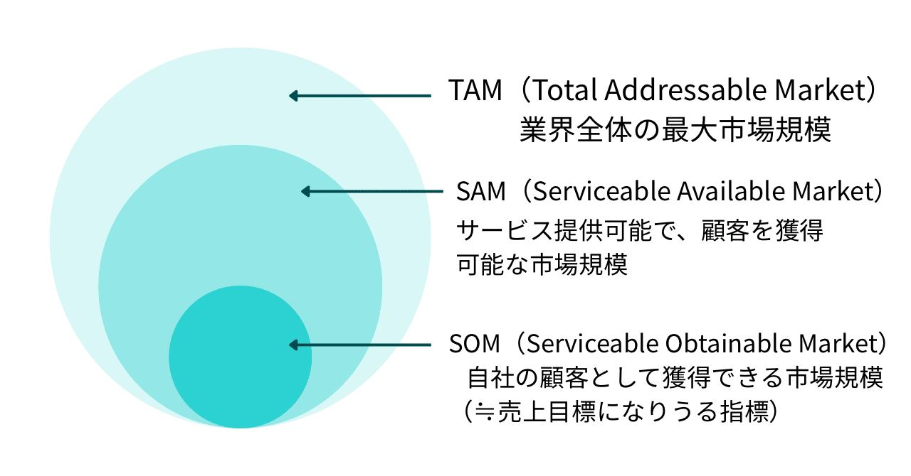
TAM(タム)・SAM(サム)・SOM(ソム)とは
「どれくらいの人に、どこまで売れそうか」を順番に考えるもの。
TAMは「理論上、最大で売れる市場」。
たとえば「世界の◯◯のすべて」みたいな
イメージですね。
SAMは「その中で、自分が狙える範囲」。
エリアや用途をしぼった現実的な市場です。
SOMは「まず本当に取りにいく場所」。
現時点で最初に勝ちにいく小さな市場です。
いきなり全部を狙うのではなく、
まず確実に勝てる場所を決めるという考え方で、本記事では
SOM = 初めに設定したペルソナ
という理解でOKです。
最初から全ユーザーに好かれようとせず、
目の前で困っている一人を笑顔にすることに集中する。
実際ターゲットを絞り込んでからの方が、
スキもフォローもスムーズに伸びましたし、
これをnoteで再確認できたのは大きな収穫です。
この章ではAIイラストをフックに、
noteでSOMからSAMへどう繋げていくのかを
私なりの解釈でまとめてみました。
本当はアカウント設計とは離れる内容ですし、
別記事にしようかと思ったんですけど、
創作ジャンル系の仮説検証の事例はいくつあってもいいとも思ったので、紹介します！
レッドオーシャンからの脱出
AIイラストというテーマに取り組むにあたり、ジャンルを見て思ったのが、
既にレッドオーシャン（飽和市場）
だということ。
特にAIが得意とする美女や美少女系のイラストでその傾向は顕著でした。
フォロワーが一定数定着した段階で
美女系のAIイラストを投稿してみたものの、
スキもビューも伸びない状態だったんですね。
https://note.com/alive_sheep6563/n/n0aa15518b838
もともと「金田まり」というキャラの様々な
一面をイラストで見せることで、
新たなファンを開拓
既存ファンの囲い込み
をしようと思っていたのですが断念。
そこでAIイラスト市場で競合が手薄な領域、
つまりブルーオーシャンを探し始めました。
SAMに第2のペルソナを設定
ターゲットにしたのはこんなペルソナです。
大企業に勤めている、小学生以下の子供が
いる30代のワーママ
なぜ、この層だったのか？
分析して彼女たちの行動が私のnoteに繋がる
構造的な不満が見えてきたからです。
① 時間的制約とビジネスへの不安
家事育児で非常に時間が限られており、
副業のためにnoteに参入したものの、
勉強する時間がない
ビジネス感覚に自信がない
という強いストレスにさらされています。
② コスト回避志向
また彼女たちは、一定の感度の高さは持ちながらも、自分でイラストを用意できない。
かといって、安定した収入源になるかわからないnoteのために
道具を揃える
プロのイラストレーターに頼む
というような投資への抵抗は大きい。
だから、ChatGPTやGeminiの無料プランで
生成できるイラストで妥協していると想定。
妙に分析が生々しいと感じたあなた、大正解です。
生々しい理由は、これが過去の私だからです。
SeaArtで自分のアイコンのイラストを描けるように
なるまでは
このアイコン、ダサいから使いたくないな～
でも自分でイラスト描けない…
何のツール使ったらいいのか全然分からん…
とりあえずこれ使うか…
というよう挫折と妥協の連続でした。
で、この体験をしたときに、
ぜっっっったい自分と同じこと悩んでる人いるでしょ？？？
いるよね！！！？？
と思ったわけですよ。
そしたらやっぱり居るわけですよ。
私と同じ、自分時間をろくに取れないママたちが。
で、彼女たちの記事を見てみると
副業・節約・収入の柱を増やす
などのキーワードが浮かんでくる。
そして検討したのが、
ビジネスの基礎知識がない不安
世界観づくりへの妥協
この2つこそが、私が求めている潜在顧客層の特徴でした。
SOMからSAMへ繋げる
彼女たちの抱える困り感に対し、以下の記事をを投稿しました。
https://note.com/alive_sheep6563/n/necf25137a449
https://note.com/alive_sheep6563/n/nde0895879116
デジタルな美女系モチーフを避け、
水彩画イラストは花
レトロポップなイラストは猫
という画風とモチーフによる差別化ですね。
どちらも女性が好む画風とモチーフを選び、
アナログ系なアイコン利用者層を刺激。
こうしてイラスト記事をきっかけに見にきた
読者が私のビジネス記事に流れたことで、
フォロワーを大きく増やすことに成功。
既存のSOMの外側にいる潜在顧客を、
感情的なフック取り込む横へ市場を広げる戦略でした。
LTVも拡張する第3のペルソナ
AIイラスト記事にはもう一つ、
高単価なペルソナを設定していました。
それは、
1,000人以上のフォロワーを抱える
メンバーシップ開設者
です。
彼らは有料記事を買い慣れていることに加え、単発マガジンよりも有料マガジンを購入する
傾向があり、顧客単価が高いんです。
もう少しペルソナの解像度を上げると、
フリーランスとして積み上げてきた
専門スキルで、良質なフォロワーを獲得。
noteで一定の地位を確立したので収益を上げるためにメンバーシップ運営を始めたものの、想定よりも構造が複雑で困っている。
という設定。
上流層ならではのデリケートなコンプレックスを抱えています。
なので、メンバーシップ開設者が増える月初に投稿したのがこちらの記事▼
https://note.com/alive_sheep6563/n/n7bc7fffc4e7e
それが予想以上にスキをもらえたので、
ダメ押しで解説記事を投入▼
https://note.com/alive_sheep6563/n/na9ceed8e51bf
認知を広げるAIイラスト記事
↓
メンバーシップに関係するビジネス記事
このように連動させることで、
メンバーシップ運営者の関心を高めつつ、
新規に開設を検討する層にもアプローチ。
実際にメンバーシップ開設者さま5名に
短期間で記事もマガジンも購入していただき、
検証の効果は確かに感じられました。
というか、大手アカウントに育ちつつある
彼らに、役に立つと思ってもらえたのが素直に嬉しいですね。
ついでにお伝えすると、
noteで市場を広げる=タグをつける
という認識なので、
最近、新規でフォロワーが増えないな…
と思っていたら、想定するペルソナに合う
タグを付けるとペルソナ層にアプローチしやすくなります。
こうして今まで設定したペルソナの共通点は、
ビジネススキルが必要だと思いつつも、
何らかの制約で解決できていない人達
このペルソナは無数に設定できると思うし、
「ビジネススキル」の部分をあなたの得意分野に当てはめることで簡単に仮説を作れます。
ちなみに、
noteの市場規模算出プロンプト（TAM/SAM/SOM）
も作ってみました。
# 指示書
あなたは戦略コンサルタントです。
指定された「noteのテーマ」と「SOM（ターゲットペルソナ）」に基づき、noteプラットフォーム上における市場規模（TAM・SAM・SOM）を定義・特定してください。
# 市場の定義ルール
- **TAM (Total Addressable Market)**: noteの全ユーザー（または国内の潜在層）の中で、このテーマに1ミリでも関心を持つ可能性がある最大市場。
- **SAM (Serviceable Addressable Market)**: TAMの中で、実際にnoteで情報を探したり、有料記事を購入したりする意欲がある「アクティブな関心層」。
- **SOM (Serviceable Obtainable Market)**: SAMの中で、設定したペルソナ（SOM）と属性が合致し、かつ半年以内にあなたのフォロワーや顧客になり得る「現実的な獲得目標」。
# 実行ステップ
1. **各層の読者属性特定**: TAM・SAM・SOMそれぞれに該当するユーザーが「どのような状況の人か」を定義してください。
2. **市場規模の推計**: 以下のnote公式データ等を参考に、各層の「想定人数」と、有料コンテンツ販売を想定した際の「年間想定市場金額」を算出してください。
* 参考指標（2026年時点想定）: Note累計会員数1,000万人以上、月間アクティブユーザー(MAU)約7,300万人。
3. **成長可能性の分析**: この市場が今後拡大する要因、または競合状況を分析してください。
# 入力項目
- **Noteのテーマ**: [前回のテーマを入力]
- **設定したペルソナ（SOM）**: [前回のペルソナ概要を入力]
# 出力形式
## 1. 市場構造の定義（読者層の特定）
## 2. Note上の市場規模推計表
| 区分 | 想定人数 | 年間想定市場規模（円） | 定義・算出根拠 |
| :--- | :--- | :--- | :--- |
| **TAM** | 000万人 | 00億円 | 全体の潜在ニーズ |
| **SAM** | 00万人 | 0億円 | note内のアクティブ層 |
| **SOM** | 0,000人 | 0,000万円 | あなたが直接狙う層 |
## 3. 市場獲得に向けた戦略アドバイス補足
noteでの市場規模を計算する場合、以下の計算式を用いてます。
[想定人数] × [想定客単価（note購入額/月）] × 12ヶ月
※noteユーザーの平均購入単価は約2,700円/月程度というデータ
（2025年時点）をベースにすると現実的かなということで。
もし有料コンテンツの販売を考えていない場合は、
金額の部分をインプレッション数や想定ビュー数に
書き換えるようAIに指示すると、
発信力（影響力）の市場規模として算出してくれます。
参考までに。
仮説検証としてやったことは、ざっくりと
ペルソナ設定
ペルソナの困りごとを想定
困りごとを解決できそうな記事を投稿
スキ・フォロー・記事の購入に繋ぐ
というシンプルなものでしたが、結果として
スキ活のような地道な努力を最小限に押さえ、
スキ300超えの記事を増やしつつ、
フォロワーを30〜50人増やすことに成功
仮説検証は、新規獲得の導線として一定の効果があったと見ています。
そして、「みんなのフォトギャラリー」への
イラストの投稿を通して、
どんな属性のクリエイターが
どんな場面で
どんなイラストを使うのか
というデータを集めようと思ってます。
かなり時間はかかりそうですが、
役立つものになったら、いずれまとめます。
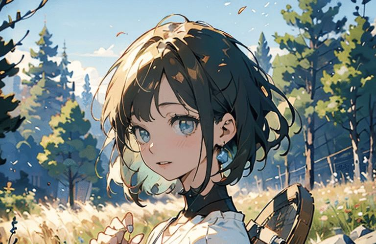
バカげたアイデアを信じ抜く
私がやったことは、特別な才能が必要なことではありません。
可愛いキャラがビジネスを語ったら
面白いかも？
という一見バカげたアイデアを、
ブランディング&マーケティングで補強し、
徹底して実行しただけです。
もしあなたが、
自分にはアイデアもスキルも何もない
と思っているなら。
自分の得意分野
誰もやらない真逆のやり方
誰かの役に立つ発信
これらを組み合わせることで、あなたにしか
到達できないブルーオーシャンを手に入れられるかも。
完璧な正解なんてないけれど、こうして自分の手を動かして見つけた自分だけの攻略法は、
何よりの財産になります。
このnoteがあなたの「一念発起」のきっかけになれば、隣の席で語っていた私も本望です。
起業支援者として、あなたのnoteライフを
応援してます✨
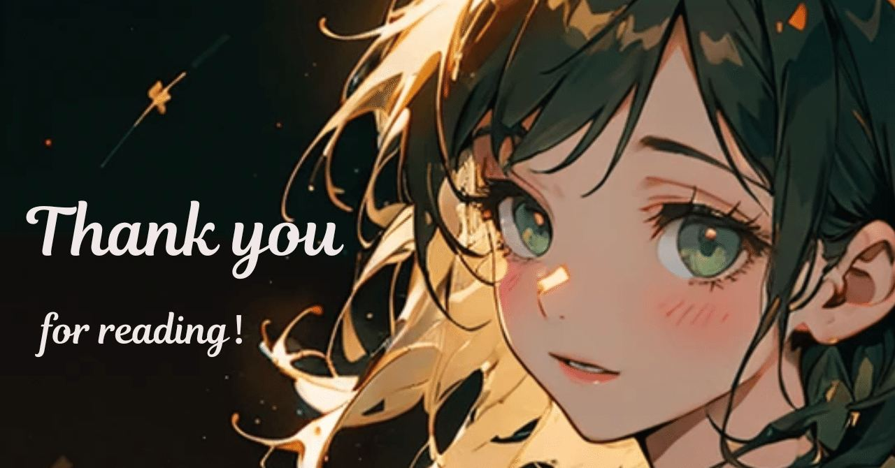